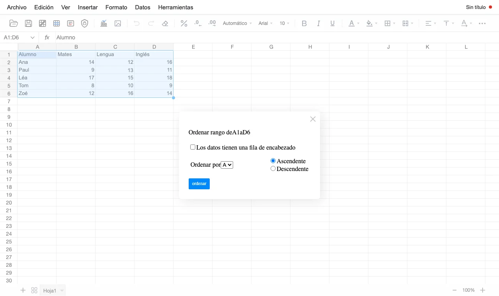
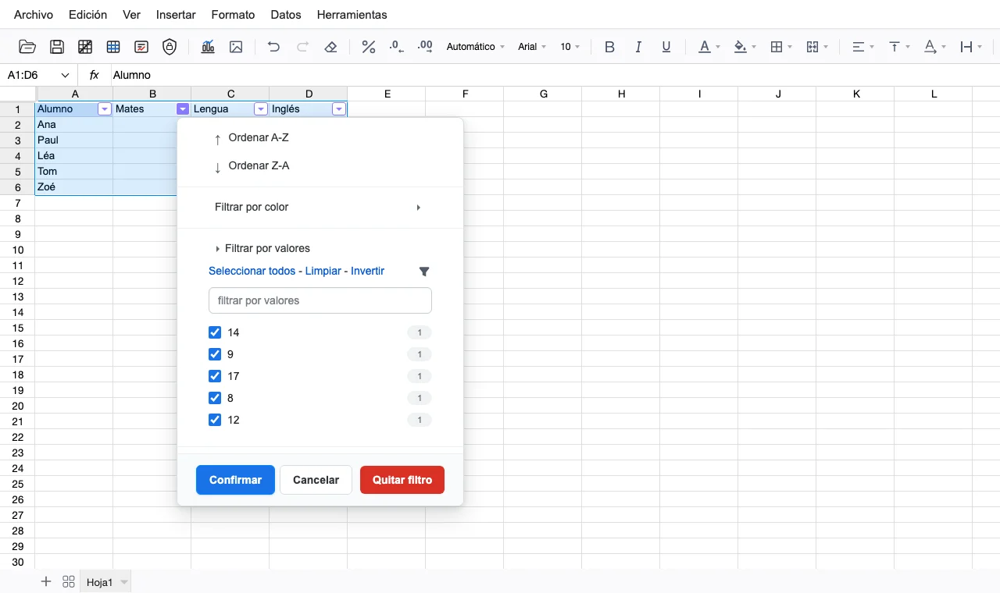
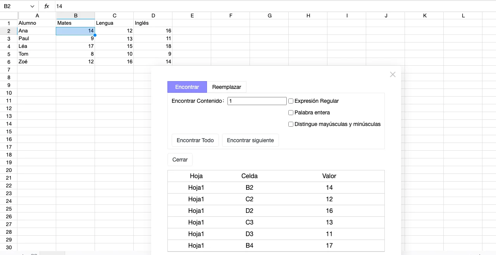

Ordenar, filtrar, buscar
Ordenar
| Comando | Efecto |
|---|---|
| Datos › Ordenar y filtrar › Ascendente, Descendente | ordena la selección según su primera columna; también con y con el clic derecho |
| clic derecho › Ordenar | elige la columna de ordenación, el orden, y si la primera fila es un encabezado |

Seleccionar toda la tabla, no una sola columna: las filas deben permanecer enteras. Un rango que contiene celdas combinadas no se ordena.
Filtrar
- Seleccionar la tabla, incluido el encabezado.
- Datos › Ordenar y filtrar › crear filtro, o , o clic derecho › Filtrar.
- Hacer clic en la flecha de una columna.

| En el menú de una columna | Efecto |
|---|---|
| Ordenar A-Z, Ordenar Z-A | ordena las filas de la tabla |
| Filtrar por color | según el color del fondo o del texto |
| Filtrar por valores | marcar los valores que se conservan; Seleccionar todos, Limpiar, Invertir; el campo busca un valor |
| Confirmar | aplica |
| Quitar filtro | retira el filtro de la tabla |
Las filas descartadas se ocultan, no se eliminan. Los filtros de varias columnas se acumulan. Datos › Ordenar y filtrar › Quitar filtro retira el filtro.
Buscar, reemplazar
Ctrl F abre Encontrar, Ctrl H Reemplazar.

| Opción | Efecto |
|---|---|
| Expresión Regular | el texto buscado es una expresión regular: ^A encuentra lo que empieza por A |
| Palabra entera | la celda entera es igual al texto |
| Distingue mayúsculas y minúsculas | distingue mayúsculas y minúsculas |
| Encontrar Todo | lista las celdas encontradas; un clic en una línea lleva a ella |
| Encontrar siguiente | va a la siguiente |
| Reemplazar, Reemplazar Todo | una celda, todas |
La búsqueda se hace en la hoja mostrada.